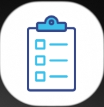
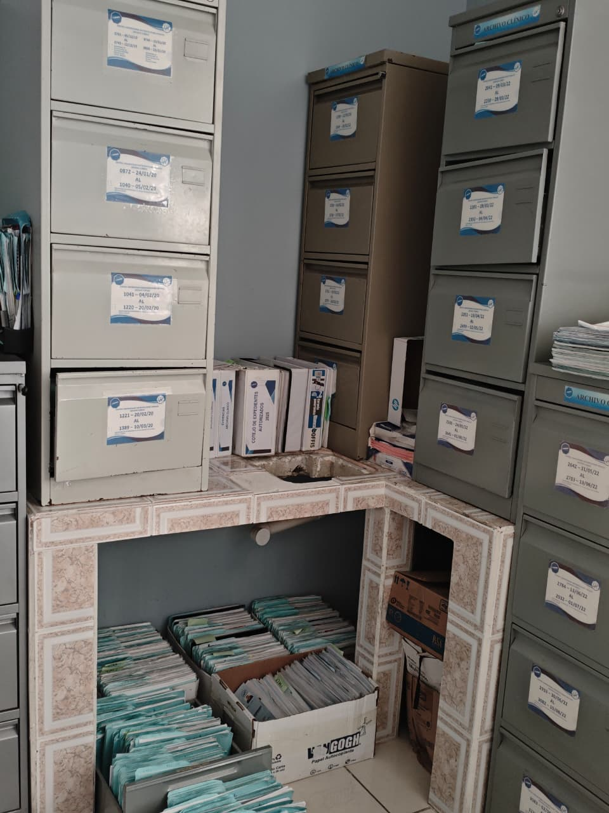
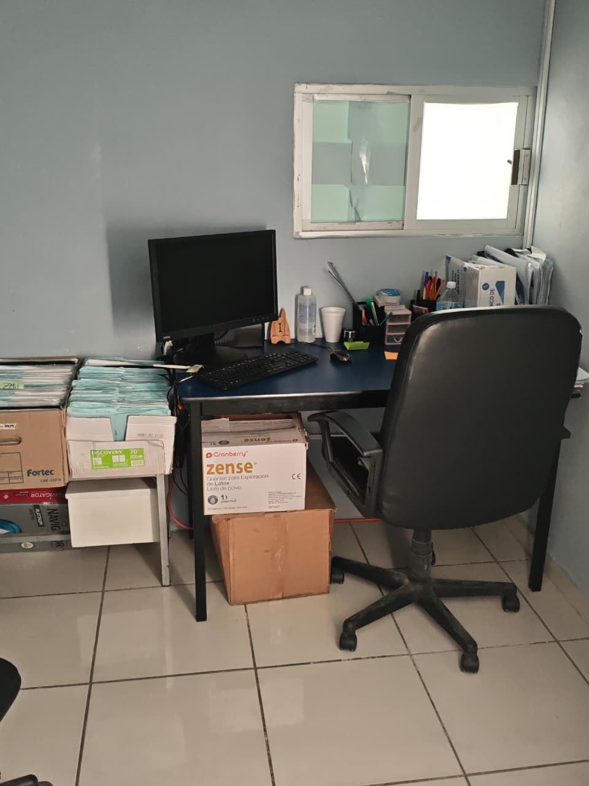
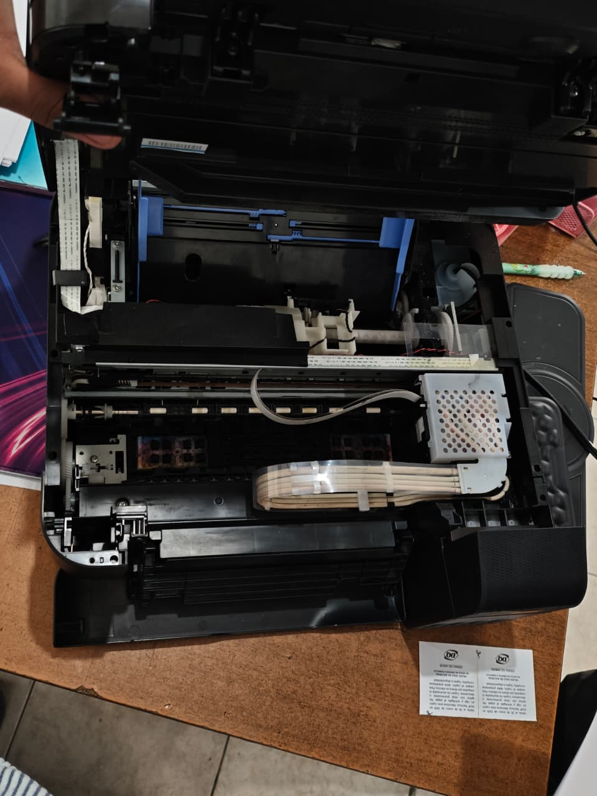

📌 Resumen del Proyecto
Durante la segunda fase (meses 05-10) se desarrolló una aplicación funcional de préstamo de expedientes clínicos como respuesta a una necesidad real del departamento: reducir errores de seguimiento y mejorar tiempos de respuesta.
📸 Capturas del Proyecto




Aplicacion de archivos
Mantenimiento del Área
Área de trabajo
Mantenimiento de equipos
📅 Etapas de Desarrollo
01
Análisis de Requerimientos
Identificación de necesidades del departamento clínico. Faltaba una forma de darle mas movilidad al prestamo y devoluciones.
02
Diseño de Flujo de Datos
Elaboración de diagramas de flujo y diseño de la estructura de base de datos para almacenar registros de expedientes, préstamos y usuarios autorizados.
03
Desarrollo e Implementación
Construcción de la aplicación, pruebas funcionales y despliegue dentro del entorno clínico. Capacitación al personal sobre el uso del sistema.
✅ Resultados Obtenidos
- Reducción de errores en el prestamo de los expedientes clinicos
- Mejora en los tiempos de respuesta para localizar expedientes
- Facilidad de consultar información sobre los pacientes
- Historial digital de movimientos por expediente